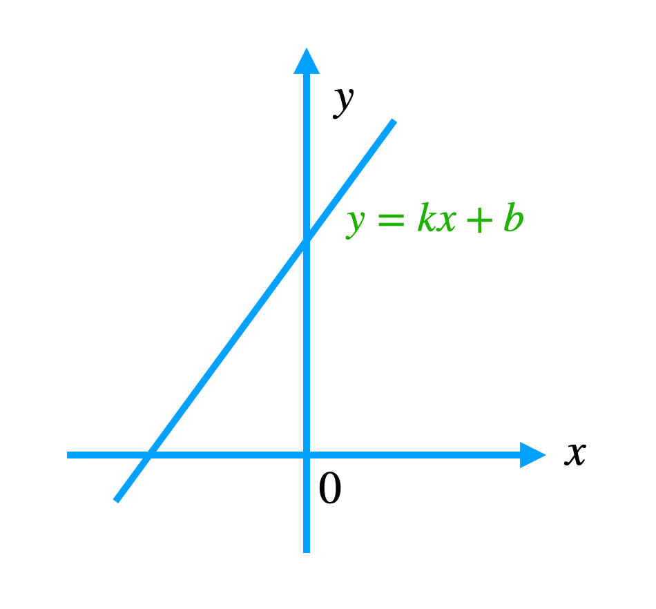

“科学是微分方程，宗教是边界条件。”（Science is a differential equation. Religion is a boundary condition.）--艾伦图灵
在二战的烽火中，世界被战争的阴影所笼罩。在一个不起眼的英国情报部门里，有一位年轻的数学家，正默默无闻地从事着一项至关重要的工作。
他拥有一颗非凡的大脑，善于从复杂的数字和逻辑中找出规律。面对德国“恩尼格玛”密码系统的挑战，他带领团队夜以继日地分析、尝试，不断寻找着破解的钥匙。
终于，在一个风雨交加的夜晚，他们迎来了胜利的曙光。通过一种独特的机器，他们成功解密了一条德国军方的加密消息，这条消息中蕴含着纳粹即将发动大规模进攻的情报。
英国情报部门迅速将这一重要信息传递给了盟军高层，从而改变了战争的走向。盟军得以提前做好准备，挫败了德国的进攻计划，挽救了无数生命。
这位年轻的数学家在战争中展现出的卓越才华和无私奉献，让他成为了人们心中的英雄。
但更为人称道的是，他在战争结束后，继续投身于科学研究，最终深远的影响了机器学习这一崭新的领域，为人工智能的发展奠定了坚实的基础。他，就是日后被誉为“现代AI之父”的艾伦·图灵。
谈论AI不得不谈论图灵，而谈论图灵，不得不谈论图灵机，图灵机是由艾伦·图灵在1936年提出的抽象计算模型，可简单理解为一个会按特定规则进行操作的“小机器”，其结构和工作原理如下：
图灵测试是由艾伦·图灵在1950年提出的一种判断机器是否具有智能的方法，具体内容如下：测试场景测试在一个封闭的环境中进行，有一台机器、一个人类被测试者和一个人类评估者。
评估者通过某种方式与机器和人类被测试者进行交流，而不知道谁是机器谁是人类，这种交流通常是通过纯文本的方式进行，如使用键盘输入和屏幕输出，以避免外貌、声音等非智力因素的干扰。
测试过程评估者可以向机器和人类被测试者提出各种各样的问题，包括常识性问题、逻辑性问题、情感性问题、创造性问题等等，然后根据他们的回答来判断谁是机器谁是人类。
如果在一定的时间内，评估者无法根据回答可靠地区分机器和人类被测试者，那么就认为这台机器通过了图灵测试，也就是说这台机器在某种程度上具有与人类相似的智能。
图灵测试的核心在于以人类的智能水平为参照，通过模拟人类的语言交流能力来判断机器是否具有智能，为人工智能的研究提供了一个明确的目标和方向。
咋看之下，图灵机和图灵测试跟我们的机器学习和深度学习没啥关系，其实不然，图灵机指明了我们用什么来实现智能，而图灵测试用于检验机器是否达到智能的标准了。
至于如何达到智能，图灵在论文中并未指明。而这就是我们今天的要介绍的主角--机器学习，将要替图灵完成未竟的事业。
首先我们来看看什么是机器学习，顾名思义，很明显，主体是机器，这个机器在这里就是指计算机，“学习”指的又是什么呢？
相信大家都知道 AI 的三驾马车：数据、算法、算力。这里的“学习”就是利用算法和统计知识去自动识别数据中的规律（比如蕴含的函数表达式），并将这些学习到的规律进行大规模的应用而无需进行明确的编程（类似上篇伪代码）。
所以数据在机器学习中的地位非常之高，比如我们有这样的一组有关于学生成绩的数据。
| 序号 | 学习时刻（小时/周） | 出勤率（%） | 作业完成率（%） | 期末成绩 |
|---|---|---|---|---|
| 1 | 10 | 90 | 85 | 80 |
| 2 | 8 | 80 | 70 | 70 |
| 3 | 12 | 95 | 90 | 88 |
| 4 | 6 | 70 | 60 | 60 |
| 5 | 15 | 98 | 95 | 92 |
| 6 | 5 | 60 | 50 | 55 |
| 7 | 9 | 85 | 80 | 75 |
| 8 | 13 | 92 | 88 | 85 |
| 9 | 7 | 75 | 70 | 68 |
这一组数据（假如不止9条），扔给机器，通过大量的分析和统计，它是可以发现一些规律的，它能够发现那些学习时刻长和出勤率高的学生，期末成绩普遍会更高，甚至可以对他们进行分组，哪些人可能是优秀，哪些人可能是良好，哪些人可能是不及格。
前者描述了一种线性关系，即：学习时刻长的学生，期末成绩普遍会更高。我们大概可以直接用初中学习过的线性函数来表达：

而后者让机器自动分组的过程称之为“聚类”，就是把归属于某一类的数据聚在一起，而这个“类别”不是我们预先给出来的，是机器自己学会的。这个“类别”在机器学习领域中，我们称之为标签。
没有标签的数据让机器去学习，找到其中的规律或者说识别出类别的过程，我们称之为“无监督学习”。
而有标签的数据，可以理解为是我们在监督机器怎么学习，这种过程称之为“有监督学习”。
比如上面的最后一列“期末成绩”我们作为标签，就是让机器通过“观察”和“学习”这些数据，找到其中蕴含的某个“公式”或者“规律”，从而利用这个“公式”来预测学生下一次的期末成绩。
除了标签列，其他列：学习时刻、出勤率、作业完成率，我们称之为特征，有监督学习也可以理解为：找到特征和标签之间的“对应关系或内在规律”的过程。
那么有监督学习和无监督学习算法有哪些呢？这里做个简单了解，无需深究，先混个脸熟即可。
无监督学习算法
有监督学习算法
机器学习：机器利用算法和统计知识去自动识别数据中的规律（比如函数表达式），并将这些学习到的规律，在新数据上应用，而无需进行明确的编程（类似上篇伪代码）
数据集：是由一组相关的数据元素所构成的集合，这些数据元素可以是数字、文本、图像、音频、视频等各种类型的数据，并且通常具有一定的结构和组织方式，用于特定的数据分析、机器学习、人工智能等任务或研究目的。
特征：能够描述数据对象的某个特定方面或属性的变量或指标。
标签：用于表示数据样本的某种属性、类别归属或目标值。
有监督学习：它是指利用标注好的训练数据（含“标签”）来训练模型，让模型学习从输入特征到输出标签的映射关系，从而对新的未知数据进行预测的一种学习方法。
无监督学习：指在没有给定明确标签或目标值的训练数据上进行学习的方法。其主要目的是发现数据中的内在结构、模式或规律。